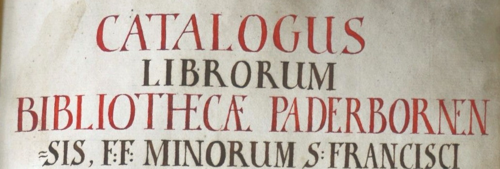

Der Bibliothekskatalog
der Paderborner Kapuziner
von 1761
Der Bibliothekskatalog
der Paderborner Kapuziner
von 1761
In der synoptischen Darstellung können Faksimile und diplomatische Edition des Paderborner Kapuzinerkataloges nebeneinandergelegt betrachtet werden. Neben dem schnellen und effektiven Bewegen innerhalb der Katalogsstruktur erlaubt die parallele Ansicht sowohl das Hinzuziehen des materiellen Erscheinungsbildes, das dank einer hohen Auflösung bis auf kleine Details vergrößert werden kann, als auch der benutzernahen Transkription, die auf einen Blick verglichen und kontrolliert werden kann. Die Verknüpfung mit zugehörigen Datenbankeinträgen ermöglicht die Weiterleitung auf Seiten, auf denen sich die Nutzerinnen und Nutzer anhand von Metadaten näher über eine Entität informieren können.
Zur EditionDie Datenbank setzt sich in erster Linie aus modellierten Daten zusammen, die durch die Auszeichnung von Entitäten (Personen, Orte, Organisationen und Werke) aus dem Katalog selbst extrahiert werden konnten. Wenn möglich, wurden diese Entitäten anschließend identifiziert und mit externen Datenbanken (etwa die GND oder Wikidata) verknüpft. Durch die Verknüpfung war es möglich, automatisiert bereits vorhandene Metadaten in die eigene Edition zu importieren und so die Datenbank mit Wissen zu erweitern, das aus dem Katalog allein nicht hervorgeht. Die Datenbank kann durch mehrere Suchfelder durchsucht und die Ergebnisse können mit Filtereinstellungen angepasst werden.
Zur Datenbank